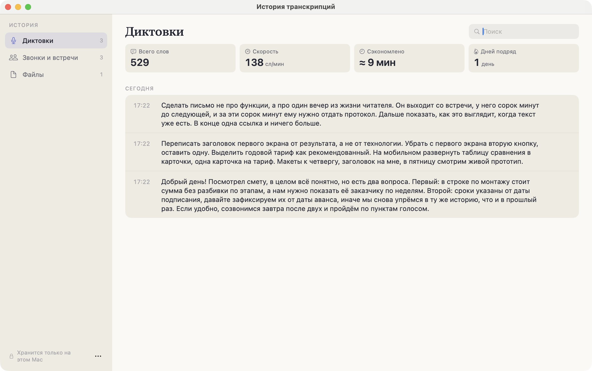
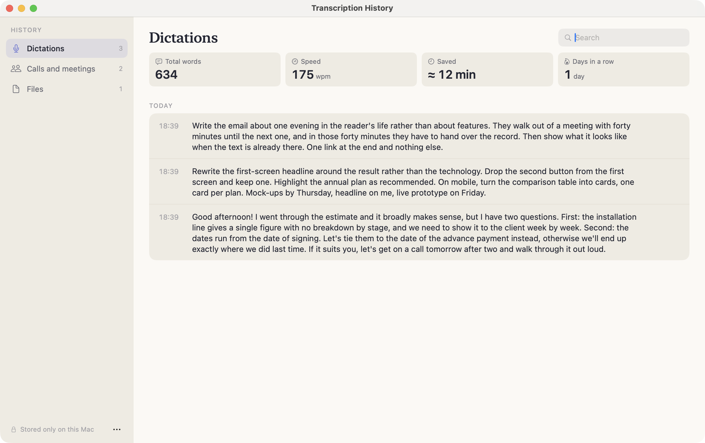
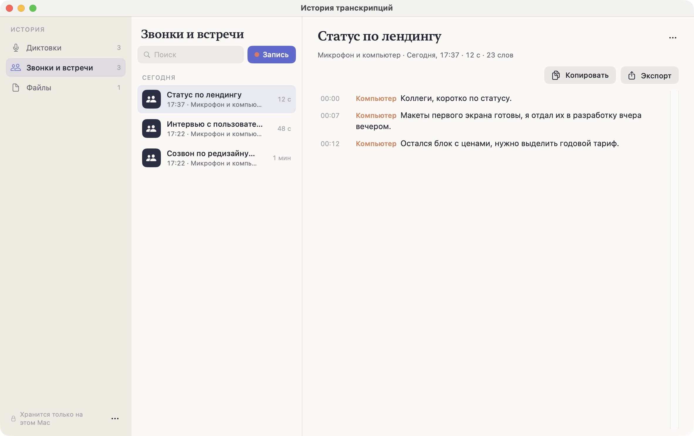
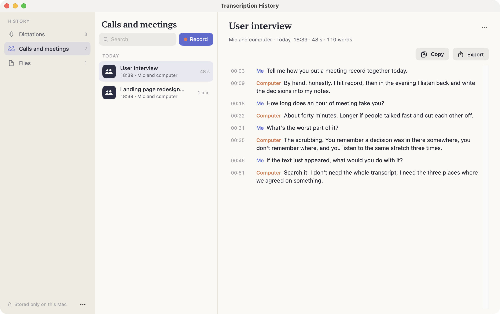

ИсторияHistory
Всё, что Heardly расшифровал, остаётся в Истории и разложено по трём разделам: «Диктовки», «Звонки и встречи» и «Файлы».Everything Heardly has transcribed stays in History, sorted into three sections: “Dictations”, “Calls and meetings” and “Files”.
Три разделаThree sections
| ДиктовкиDictations | Всё, что вы наговорили в поля ввода. Короткие записи без таймкодов, показываются сразу текстом.Everything you dictated into text fields. Short entries without timecodes, shown as plain text. |
| Звонки и встречиCalls and meetings | Живые записи. У реплик есть время и подпись источника — «Я» или «Компьютер».Live recordings. Lines carry a time and a source label — “Me” or “Computer”. |
| ФайлыFiles | Расшифровки загруженных аудио и видео, с таймкодами. Здесь же зона для новых файлов.Transcripts of uploaded audio and video, with timecodes. The drop zone for new files is here too. |




Поиск и порядокSearch and order
Поле поиска ищет по тексту расшифровок, а не только по названиям, — так проще найти встречу, от которой помнишь одну фразу. Записи сгруппированы по дням: «Сегодня», «Вчера» и дальше по датам.
The search field looks inside the transcripts, not just at the titles — which helps when all you remember of a meeting is one phrase. Entries are grouped by day: “Today”, “Yesterday” and then by date.
Где это лежитWhere it is kept
Внизу окна написано «Хранится только на этом Mac», и это буквально так: каждая запись — обычный текстовый файл в папке расшифровок. Никакого облака и никакой синхронизации у Heardly нет.
Файлы можно переименовывать и удалять прямо в Finder — История подхватит изменения.
The line at the bottom of the window says “Stored only on this Mac”, and it is literal: every entry is an ordinary text file in the transcripts folder. Heardly has no cloud and no sync.
You can rename and delete the files in Finder — History picks the changes up.